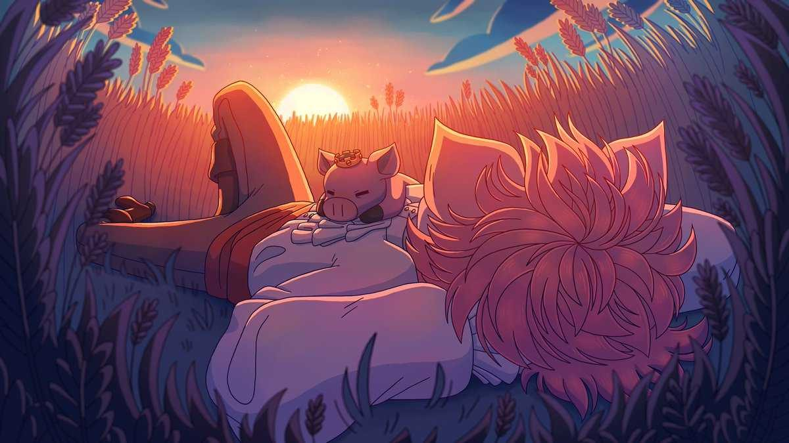

Alexander (June 1, 1999 – June 2022), known online as Technoblade, was an American YouTuber and internet personality known for his Minecraft videos and livestreams on his YouTube channel and his involvement in the Dream SMP.
Technoblade registered his main channel on YouTube in 2013. His content focused on Minecraft gameplay, particularly on the minigame server Hypixel. After rising to popularity in 2019 for his performances in player versus player events, Technoblade was invited to the Dream SMP Minecraft server in 2020, further increasing his following. He is widely regarded by the game's community as one of the best Minecraft players.
Technoblade first registered and began uploading on his main YouTube channel on October 28, 2013.
Technoblade became a member of the Dream SMP in 2020, a Minecraft server hosted by the YouTuber Dream which features numerous popular Minecraft YouTubers. He began frequently creating content and livestreams on the server.
Technoblade had a friendly rivalry with Dream, and they were both generally regarded as among the best Minecraft players in the world.
Born on June 1, 1999, Technoblade resided in San Francisco, California. In a 2018 video, he revealed he had begun attending college as an English major, but dropped out to play Minecraft full-time.
The announcement of his death became the top trending video on YouTube later that day. It remained on the trending tab for several days and surpassed 30 million views in the first 24 hours.
It has since been viewed over 80 million times and liked over 8 million times, becoming the most viewed and most liked video on Technoblade's channel.